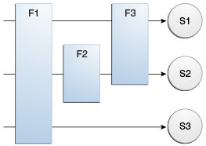

A filter is an object that can transform the header and content (or
both) of a request or response. Filters differ from web components in
that filters usually do not themselves create a response. Instead, a
filter provides functionality that can be "attached" to any kind of web
resource. Consequently, a filter should not have any dependencies on a
web resource for which it is acting as a filter; this way, it can be
composed with more than one type of web resource.
The main tasks that a filter can perform are as follows.
-
Query the request and act accordingly.
-
Block the request-and-response pair from passing any further.
-
Modify the request headers and data. You do this by providing a
customized version of the request.
-
Modify the response headers and data. You do this by providing a
customized version of the response.
-
Interact with external resources.
Applications of filters include authentication, logging, image
conversion, data compression, encryption, tokenizing streams, XML
transformations, and so on.
You can configure a web resource to be filtered by a chain of zero, one,
or more filters in a specific order. This chain is specified when the
web application containing the component is deployed and is instantiated
when a web container loads the component.
Programming Filters
The filtering API is defined by the Filter, FilterChain, and
FilterConfig interfaces in the javax.servlet package. You define a
filter by implementing the Filter interface.
Use the @WebFilter annotation to define a filter in a web application.
This annotation is specified on a class and contains metadata about the
filter being declared. The annotated filter must specify at least one
URL pattern. This is done by using the urlPatterns or value
attribute on the annotation. All other attributes are optional, with
default settings. Use the value attribute when the only attribute on
the annotation is the URL pattern; use the urlPatterns attribute when
other attributes are also used.
Classes annotated with the @WebFilter annotation must implement the
javax.servlet.Filter interface.
To add configuration data to the filter, specify the initParams
attribute of the @WebFilter annotation. The initParams attribute
contains a @WebInitParam annotation. The following code snippet
defines a filter, specifying an initialization parameter:
import javax.servlet.Filter;
import javax.servlet.annotation.WebFilter;
import javax.servlet.annotation.WebInitParam;
@WebFilter(filterName = "TimeOfDayFilter",
urlPatterns = {"/*"},
initParams = {
@WebInitParam(name = "mood", value = "awake")})
public class TimeOfDayFilter implements Filter {
...
The most important method in the Filter interface is doFilter, which
is passed request, response, and filter chain objects. This method can
perform the following actions.
-
Examine the request headers.
-
Customize the request object if the filter wishes to modify request
headers or data.
-
Customize the response object if the filter wishes to modify response
headers or data.
-
Invoke the next entity in the filter chain. If the current filter is
the last filter in the chain that ends with the target web component or
static resource, the next entity is the resource at the end of the
chain; otherwise, it is the next filter that was configured in the WAR.
The filter invokes the next entity by calling the doFilter method on
the chain object, passing in the request and response it was called with
or the wrapped versions it may have created. Alternatively, the filter
can choose to block the request by not making the call to invoke the
next entity. In the latter case, the filter is responsible for filling
out the response.
-
Examine response headers after invoking the next filter in the chain.
-
Throw an exception to indicate an error in processing.
In addition to doFilter, you must implement the init and destroy
methods. The init method is called by the container when the filter is
instantiated. If you wish to pass initialization parameters to the
filter, you retrieve them from the FilterConfig object passed to
init.
Programming Customized Requests and Responses
There are many ways for a filter to modify a request or a response. For
example, a filter can add an attribute to the request or can insert data
in the response.
A filter that modifies a response must usually capture the response
before it is returned to the client. To do this, you pass a stand-in
stream to the servlet that generates the response. The stand-in stream
prevents the servlet from closing the original response stream when it
completes and allows the filter to modify the servlet’s response.
To pass this stand-in stream to the servlet, the filter creates a
response wrapper that overrides the getWriter or getOutputStream
method to return this stand-in stream. The wrapper is passed to the
doFilter method of the filter chain. Wrapper methods default to
calling through to the wrapped request or response object.
To override request methods, you wrap the request in an object that
extends either ServletRequestWrapper or HttpServletRequestWrapper.
To override response methods, you wrap the response in an object that
extends either ServletResponseWrapper or HttpServletResponseWrapper.
Specifying Filter Mappings
A web container uses filter mappings to decide how to apply filters to
web resources. A filter mapping matches a filter to a web component by
name or to web resources by URL pattern. The filters are invoked in the
order in which filter mappings appear in the filter mapping list of a
WAR. You specify a filter mapping list for a WAR in its deployment
descriptor by either using NetBeans IDE or coding the list by hand with
XML.
If you want to log every request to a web application, you map the hit
counter filter to the URL pattern /*.
You can map a filter to one or more web resources, and you can map more
than one filter to a web resource. This is illustrated in
Figure 18-1, in which filter F1 is mapped to servlets S1,
S2, and S3; filter F2 is mapped to servlet S2; and filter F3 is mapped
to servlets S1 and S2.
Figure 18-1 Filter-to-Servlet Mapping

Recall that a filter chain is one of the objects passed to the
doFilter method of a filter. This chain is formed indirectly by means
of filter mappings. The order of the filters in the chain is the same as
the order in which filter mappings appear in the web application
deployment descriptor.
When a filter is mapped to servlet S1, the web container invokes the
doFilter method of F1. The doFilter method of each filter in S1’s
filter chain is invoked by the preceding filter in the chain by means of
the chain.doFilter method. Because S1’s filter chain contains filters
F1 and F3, F1’s call to chain.doFilter invokes the doFilter method
of filter F3. When F3’s doFilter method completes, control returns to
F1’s doFilter method.
To Specify Filter Mappings Using NetBeans IDE
-
Expand the application’s project node in the Project tab.
-
Expand the Web Pages and WEB-INF nodes under the project node.
-
Double-click web.xml.
-
Click Filters at the top of the editor window.
-
Expand the Servlet Filters node in the editor window.
-
Click Add Filter Element to map the filter to a web resource by name
or by URL pattern.
-
In the Add Servlet Filter dialog box, enter the name of the filter
in the Filter Name field.
-
Click Browse to locate the servlet class to which the filter
applies.
You can include wildcard characters so that you can apply the filter to
more than one servlet.
-
Click OK.
-
To constrain how the filter is applied to requests, follow these
steps.
-
Expand the Filter Mappings node.
-
Select the filter from the list of filters.
-
Click Add.
-
In the Add Filter Mapping dialog box, select one of the following
dispatcher types:
-
REQUEST: Only when the request comes directly from the client
-
ASYNC: Only when the asynchronous request comes from the client
-
FORWARD: Only when the request has been forwarded to a component (see
Transferring Control to Another Web
Component)
-
INCLUDE: Only when the request is being processed by a component that
has been included (see Including Other
Resources in the Response)
-
ERROR: Only when the request is being processed with the error page
mechanism (see Handling Servlet Errors)
You can direct the filter to be applied to any combination of the
preceding situations by selecting multiple dispatcher types. If no types
are specified, the default option is REQUEST.
 Copyright © 2017, Oracle and/or its affiliates. All rights reserved.
Copyright © 2017, Oracle and/or its affiliates. All rights reserved.